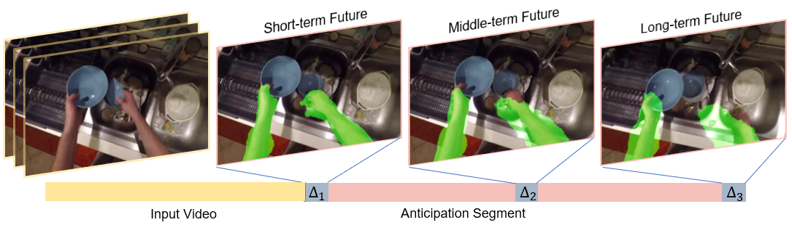

|
Georgia Institute of Technology, Atlanta, United States
*denotes equal contribution
[code]
[paper]
[suppl]
[poster]

We introduce the novel problem of anticipating a time series of future hand masks from egocentric video. A key challenge is to model the stochasticity of future head motions, which globally impact the head-worn camera video analysis. To this end, we propose a novel deep generative model -- EgoGAN. Our model first utilizes a 3D Fully Convolutional Network to learn a spatio-temporal video representation for pixel-wise visual anticipation. It then generates future head motion using the Generative Adversarial Network (GAN), and predicts the future hand masks based on both the encoded video representation and the generated future head motion. We evaluate our method on both the EPIC-Kitchens and the EGTEA Gaze+ datasets. We conduct detailed ablation studies to validate the design choices of our approach. Furthermore, we compare our method with previous state-of-the-art methods on future image segmentation and provide extensive analysis to show that our method can more accurately predict future hand masks.
|
|
If you want to cite our work, please use following BibTex:
@article{jia2022generative,
title={Generative Adversarial Network for Future Hand Segmentation from Egocentric Video},
author={Jia, Wenqi and Liu, Miao and Rehg, James M},
journal={arXiv preprint arXiv:2203.11305},
year={2022}
}
|
|